t_ColorMatching
Tutorial on color matching
This tutorial introduces several computational methods in color. These are: * How to compute the XYZ values of a light source * How to set a monitor output to achieve these XYZ levels * How to manage the nonlinear relationship between frame buffer and emitted light output * How to compute and plot the xy chromaticity values of a display
There are a set of questions at the end that can help you deepen your understanding.
Class: Psych 221 - Applied Vision and Image Systems Tutorial: Color Matching on Displays Author: Wandell Purpose: Introduce SPDs, XYZ functions, gamma, matching calculations Last Update: 2015/1/5 (HJ) Duration: 45 minutes
Matlab 5: Checked 01.06.98 BW Matlab 7: Checked 01.06.06 GN/BW R2014b: Updated 12.31.14, use display objects and ieReadSpectra DHB
Contents
Initialize
ieInit;
Computing XYZ values of a monitor
We must measure the main functions that define the color properties of any display: these are the phosphor spectral power distributions (SPDs). We measure these functions using a spectral radiometer, a device that measures the power per nanometer emitted by the display.
The spectral power distributions of a monitor in the Wandell lab, measured when the monitor display intensity was set to full value, are stored in the corresponding display object. We extract the phosphor spectral power distributions.
d = displayCreate('CRT-Dell'); wavelength = displayGet(d, 'wave'); dWave = wavelength(2) - wavelength(1); % wavelength bin size phosphors = displayGet(d, 'spd primaries'); % plot spectral power distribution vcNewGraphWin; plot(wavelength,phosphors(:,3:-1:1)) xlabel('Wavelength (nm)'), ylabel('Intensity') title('Spectral Power Distribution of Example Monitor'); set(gca, 'xlim', [350 750]); grid on; % To measure the XYZ values of these phosphors, we load in the xbar,ybar, % zbar functions defined by the CIE. These are stored in the columns % of a matrix, called xyz.mat XYZ = ieReadSpectra('XYZ',wavelength); vcNewGraphWin; plot(wavelength, XYZ); xlabel('Wavelength (nm)'); ylabel('Responsivity'); legend('xbar', 'ybar', 'zbar'); title('CIE XYZ Functions'); set(gca,'xlim',[350 750]); grid on % Now, we can compute the (X,Y,Z) values of each of the phosphors by % multiplying the phosphor matrix times the xyz matrix. Notice that the % phosphors are in the columns of the matrix on the right, and the % xbar,ybar,zbar functions are in the rows of the matrix on the left. maxXYZ = 683 * XYZ' * phosphors * dWave; % The luminance of each phosphor is given by the Y values. The maximum % value is when the phosphors are set to maximum intensity disp(['Max luminance of phosphors: ' num2str(maxXYZ(2,:))]); % The total luminance the display can reach, with all three phosphors on, % is given by the sum of these three values, 100 cd/m^2 is a typical % luminance level for monitors. disp(['Total luminance:' num2str(sum(maxXYZ(2,:)))]); % A simple way to compute XYZ from spectrum is using function % ieXYZFromEnergy maxXYZ = ieXYZFromEnergy(phosphors', wavelength)';
Max luminance of phosphors: 21.494 67.1483 11.9829 Total luminance:100.6252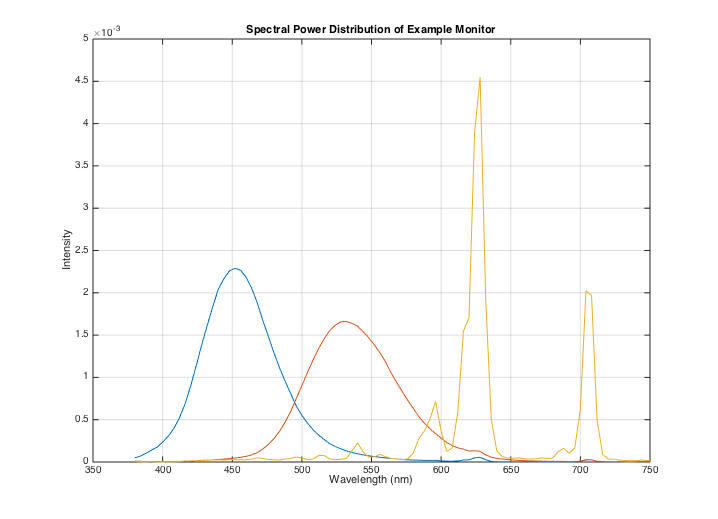 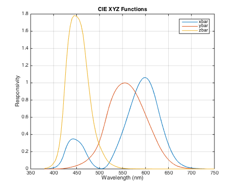
Using the CMFs to Match a target (linear display, gamma = 1)
Suppose that you send a space ship to the surface of Mars. The spaceship sends back a measurement of a spectral power distribution. Let's load it up.
ieReadSpectrum adjusts the wavelength sampling stored in the file to match what we pass it. In this case, it extrapolate the value at long wavelength as zeros
marsSPD = ieReadSpectra('marsspectrum', wavelength); vcNewGraphWin; plot(wavelength, marsSPD, 'r-') set(gca,'ylim',[0 1]); grid on; xlabel('wavelength (nm)'); ylabel('Intensity'); title('Spectral Power Distribution measurement from Mars'); % Now, how do we set the monitor intensities so that what we see on a % display is a visual match to the spectrum measured on Mars? We use the % XYZ color-matching functions. First, measure the values for the Martian % spectrum marsXYZ = ieXYZFromEnergy(marsSPD', wavelength); % Now, recall that the monitor color properties are determined by the % relative intensity of the outputs of the monitor phosphor SPDs. Suppose % these intensities are [r,g,b]'. Then the monitor output is % phosphors*[r,g,b]'. For example, when the red phosphor only is on the % spectrum is vcNewGraphWin; plot(wavelength, phosphors*[1 0 0]', 'r-'); xlabel('wavelength(nm)'); ylabel('Intensity') title('SPD of Red Phosphor'); % When the red and blue are on, the output is plot(wavelength, phosphors*[1 0 1]','m-'); xlabel('wavelength(nm)'); ylabel('Intensity') title('SPD of Red and Blue Phosphors Combined'); % To find the relationship between the [r,g,b] values and the monitor XYZ % outputs, we only need to multiply the output times the XYZ functions. % Hence, there is a matrix that maps the linear monitor intensities into % the XYZ values. This matrix is mon2XYZ = ieXYZFromEnergy(phosphors', wavelength); %#ok % Or we can use mon2XYZ = displayGet(d, 'rgb2xyz'); % Take a look at this matrix and think about its entries. Notice that the % first column contains the XYZ values associated with the red phosphor, % the middle with the green, and the third column is associated with the % blue. These values should make sense to you given the shapes of the XYZ % functions we have already plotted. % Now, to represent the Martian spectrum on our display, we need to compute % only one more thing. How do we set the [r,g,b] values when we know the % XYZ values of the spectrum? For this, we need a matrix that converts XYZ % to monitor linear gun intensities, the inverse of the matrix that we % have. So, we calculate this new matrix as marsRGB = mon2XYZ \ marsXYZ(:); % The spectrum we should display, therefore, is equal to vcNewGraphWin; subplot(2,1,1); plot(wavelength, phosphors * marsRGB) title('Output SPD of the monitor'); xlabel('wavelength(nm)'); ylabel('Intensity') % This will be a visual match to the spectrum subplot(2,1,2) plot(wavelength,marsSPD); title('SPD of original martian image'); xlabel('wavelength(nm)');ylabel('Intensity') % The principles are the same when we make a match on a normal monitor. The % only difference, which is reviewed below, is that the frame-buffer % entries and the intensity of the phosphor output are a nonlinearly % related. Hence, we must set the frame-buffer entries so that we obtain % the linear intensity outputs we have just calculated. This process is % called gamma correction.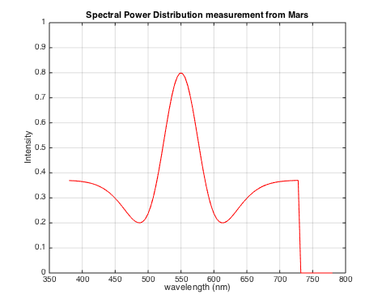 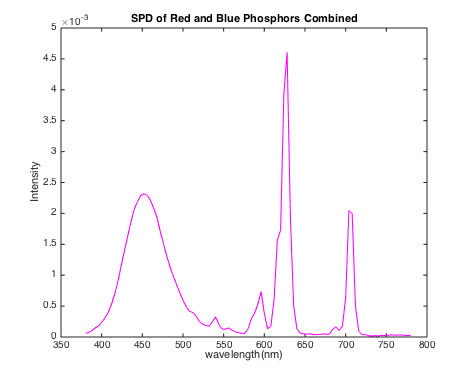 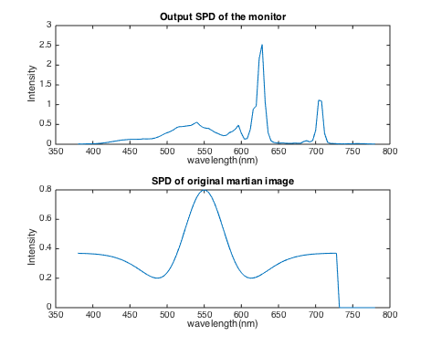
Nonlinearity in display - Gamma table and inverse gamma table
The relationship between the intensity emitted by a CRT phosphor and the frame-buffer value is generally a nonlinear function. An example of the function relating frame-buffer value to emitted light intensity is shown here.
% We pull the measured gamma functions out of the display object. This % particular one was measured at a small number of levels. Go figure. monitorGam = displayGet(d, 'gamma'); nLevels = size(monitorGam,1); vcNewGraphWin; plot(1:nLevels,monitorGam(:,1)); grid on; xlabel('Frame buffer'); ylabel('Emitted intensity of red phoshor'); title('Display Red "Gamma" function') % This is called the "gamma" function of the display. The reason for this % title is that the function is roughly a simple power function and the % exponent has historically been called "gamma." Here is a comparison of % the gamma function of the red phosphor and a power function with an % exponent of 2.2, the most common value. vcNewGraphWin; frameBuffer = 1:nLevels; pred = ((frameBuffer)/nLevels).^(2.2); plot(frameBuffer,pred,'k-',frameBuffer,monitorGam(:,1),'r-') xlim([0 256]); xlabel('Frame buffer'); ylabel('Intensity'); title('Comparison of Power function and red phosphor emission') legend('y = x^2^.^2', 'Red phosphor','Location', 'NorthWest'); grid on % For grins, you can see that the fit is different using a larger exponent. vcNewGraphWin; frameBuffer = 1:nLevels; pred = ((frameBuffer)/nLevels).^(2.7); plot(frameBuffer,pred,'k-',frameBuffer,monitorGam(:,1),'r-') xlim([0 256]); xlabel('Frame buffer'); ylabel('Intensity'); title('Comparison of Power function and red phosphor emission') legend('y = x^2^.^7', 'Red phosphor','Location', 'NorthWest'); grid on % Recall that we measured the emitted intensity using the maximum % framebuffer value. This corresponds to the column entries in phosphor, % and these are the signals emitted when the relative intensity is one. % To specify the intensity of the emitted light for any given frame-buffer % level, we can use the simple gamma function. For example, the spectral % power distribution of the light emitted by the green phosphor at a frame % buffer level of 130 is vcNewGraphWin; emitted = phosphors(:,2)*monitorGam(130,2); plot(wavelength,emitted), grid on xlabel('Wavelength') ylabel('Intensity') title('SPD of Green Phosphor at fb = 130'); % Frequently, we are interested in how to set the frame-buffer level in % order to obtain a given linear output intensity. To determine this, we % must calculate the inverse of the "gamma" function. If we have fit a % simple polynomial to the gamma function, then we can calculate the % frame-buffer setting by inverting the function. So that given a linear % intensity, l, we can calculate the frame-buffer value as frame-buffer = % l^(1/gamma). vcNewGraphWin; intensity = 0:.001:1; predFB = intensity.^(1/2.2); plot(intensity,predFB) xlabel('Intensity'); ylabel('Frame buffer level'); title('Power Gamma Function Inverse'); grid on % Another way to perform this calculation is by creating a look-up table % that inverts the gamma function. Here is the ISETBIO way to do this. vcNewGraphWin; invGamTable = ieLUTInvert(monitorGam); nTableLevels = size(invGamTable, 1); plot((1:nTableLevels)/nTableLevels,invGamTable/max(invGamTable)); grid on; xlabel('Relative intensity'); ylabel('Frame buffer level'); title('Calibration Inverse Gamma Table Values'); % (We make invGamTables with more than 8 bits of resolution because some of % the frame buffers we have in the lab are 10 bits.)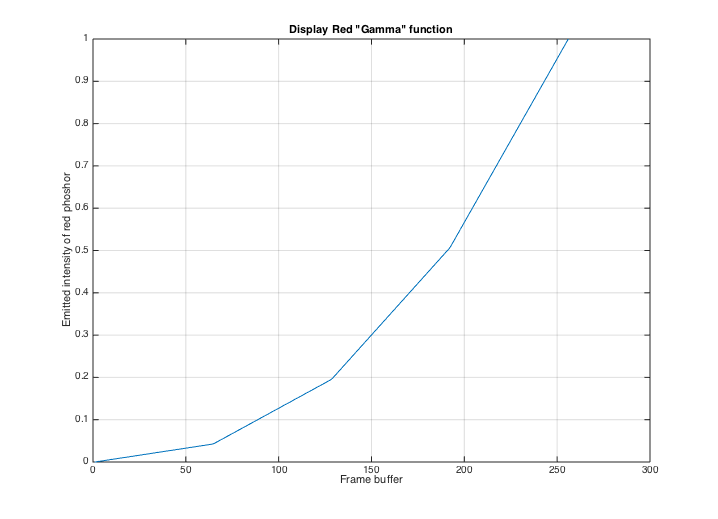 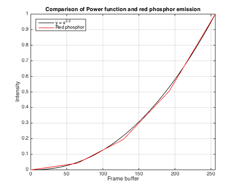 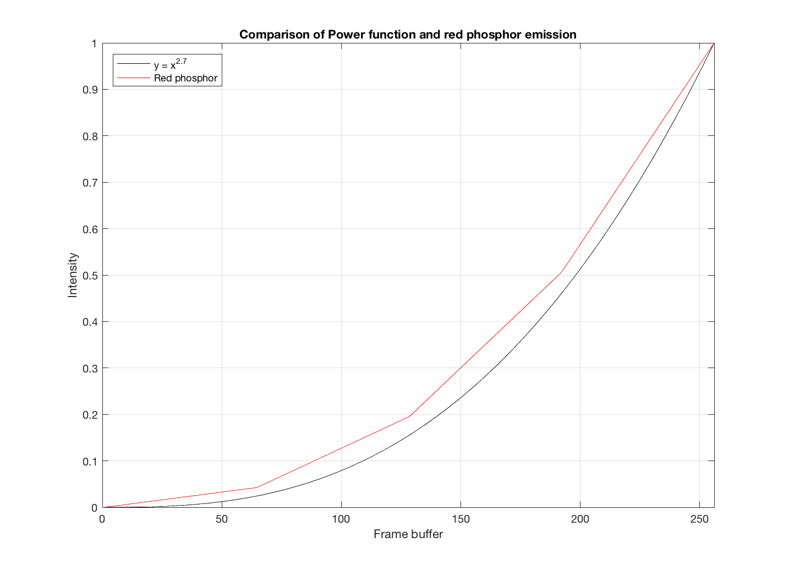 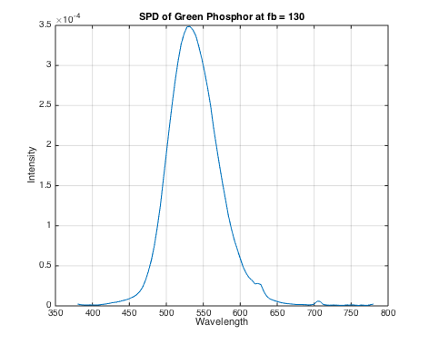 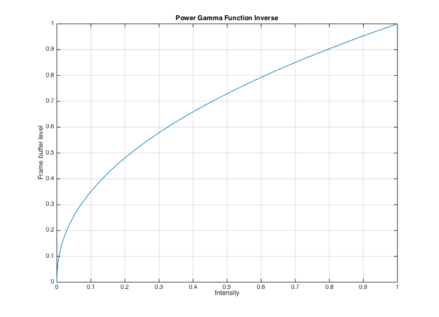 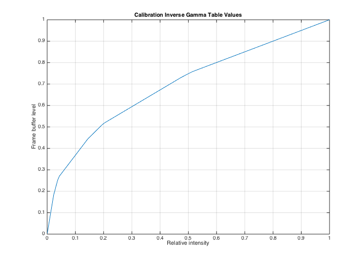
Invert the gamma table
The function ieLUTLinear inverts the gamma table. It produces its output in the integer range that was specified at display calibration time, but doesn't round.
intensity = (.1:.2:.9); fb = round(ieLUTLinear(intensity, invGamTable)); % Now, let's see how well we did. Here are the intensities we will obtain % with these frame buffer values. obtainedIntensity = monitorGam(fb,1); % We can plot the obtained and desired intensities in a graph We are close, % but because of the quantization of the device we do not obtain the exact % linear intensities. plot(intensity, obtainedIntensity, 'o', intensity, intensity,'-'); grid on axis equal, axis square, axis tight set(gca,'xtick',(0:.2:1),'ytick',(0:.2:1)) %identityLine = line([0 1],[0 1]); legend('Obtained Intensity', 'Ideal Intensity', 'Location', 'NorthWest'); title('Ideal vs Obtained Intensity');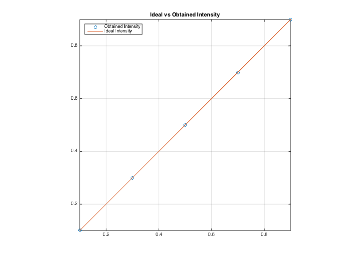
Computing xy-chromaticity coordinates
The monitor is also described in terms of several different chromaticity coordinate measurements, namely its "white point" and the gamut of colors that it can reach. The white point is the chromaticity coordinates of the display when all three phosphors are set to maximum intensity. These can be computed as
whitePoint = chromaticity(sum(maxXYZ, 2)')'; % The (x,y) chromaticity coordinates of the phosphors can be computed % individually as xyMonitor = chromaticity(maxXYZ')'; % We can build a graph describing the chromaticity coordinates of the % phosphors and the white point by first computing the xy coordinates of % the spectrum. Remember that the rows of xyz contain the XYZ values of % each spectral light. So, we can compute the chromaticity of the spectral % lights as xySpectrum = chromaticity(XYZ)'; % Now, we plot these values and turn on hold. Any light is a mixture of % spectral lights, so these values define an outer boundary for where any % physical light can fall. plotSpectrumLocus; % Read this routine axis equal, axis square grid on, xlabel('x-chromaticity'), ylabel('y-chromaticity') title('Spectrum Locus (gamut of visible light)'); hold on % Overlay the xy coordinates of the three monitor phosphors on top of the % graph plot(xyMonitor(1,1),xyMonitor(2,1),'ro'); plot(xyMonitor(1,2),xyMonitor(2,2),'go'); plot(xyMonitor(1,3),xyMonitor(2,3),'bo'); % And place a patch over the region where sums of the phosphors can fall. % This is called the "gamut" of the display p = patch(xyMonitor(1,:), xyMonitor(2,:), [.5 .5 .5]); % Finally, add in the chromaticity coordinate of the white point and label % the axes. plot(whitePoint(1),whitePoint(2),'wo'); xlabel('x chromaticity'), ylabel('y chromaticity') hold off % To plot gamut for a display, we can simply call displayPlot(d, 'gamut'); % Notice that the white point coordinates are not at the middle of the % gamut. The position of the white point depends on the sum of the (X,Y,Z) % values from each of the phosphors. These are unequal, with the green and % blue being the largest. Hence, the white point is closer to these two % corners of the gamut sum(maxXYZ)
ans = 1.0e+02 * 0.629988328240694 1.101268068286888 1.585156584602907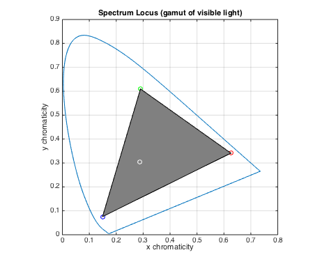 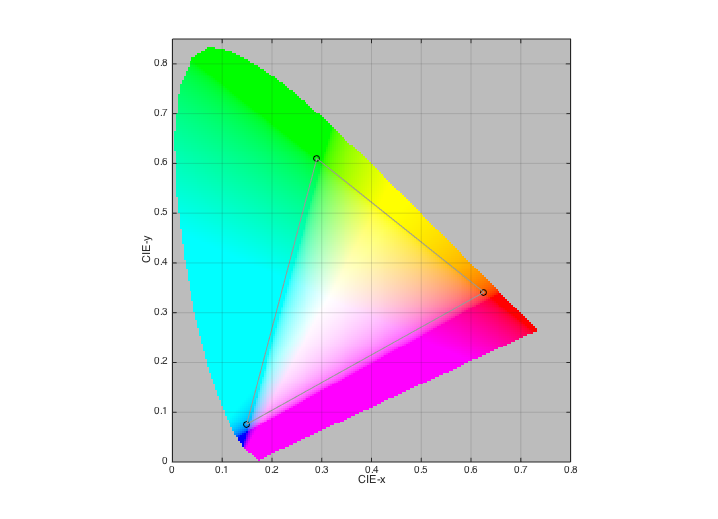
TUTORIAL QUESTIONS
USING THE COLOR MATCHING FUNCTIONS
Consider a color matching experiment using a CRT monitor with phosphor spectral power distributions (SPD) given by 'phosphors' in cMatch/monitor.mat
a) Using the CIE-XYZ method, calculate what phosphor intensities you will need to match a monochrome light at 550nm. What phosphor intensities are needed to match a monochrome light at 430nm?
b) Plot the SPD of the phosphors that would make this match. Why are these intensities not physically realizable?
c) If you wanted to perform an experiment to test the predicted match, what could you do to arrange the viewing conditions?
COLOR MONITOR CALIBRATION AND CHROMATICITY
a) Let the SPDs of the three phosphors of a color monitor be R, G, and B. Let the value of a pixel be written as a vector x = [r,g,b], where r, g, and b are between 0 and 1.
Write the matrix equation that expresses the SPD of a monitor pixel displaying the pixel x. (Ignore gamma correction)
b) How do the set of spectral power distributions emitted from a pixel compare with the spectral power distributions that are possible in the environment?
c) Typical monitors can modulate the linear phosphor intensity at 256 levels (8-bits). Suppose that you could modulate the phosphor intensities at 16-bit accuracy. Would this monitor produce better images? If you are not sure, then state what you need to know about the human visual system to decide whether the improvement is worthwhile.
d) Suppose that you are able to build a monitor with a fourth phosphor, not just the three that are usually built. In what sense would this monitor be better than a three-primary monitor? If you could set the x-y chromaticity of the phosphor, how would you design it to achieve the best monitor performance? You may want to sketch or plot a chromaticity diagram to show what you mean.
Optional questions
Suppose you are an LCD manufacturer, and you know that if you had an ideal LCD, each of the R,G,B color channels would emit light according to the SPD given in monitors.mat. We have already plotted the color gamut of such a monitor.
In a real LCD display, the LC gates are not able to block 100% of the light from the backlight. Suppose that due to such leakage, the contrast ratio between a fully black and fully white display is 100:1. Plot the gamut of colors for this display and explain what happens.